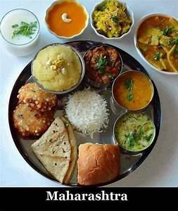

South Indian Foods:
1.Telangana:
Telangana Cuisine is typically spicy and ingredients such as tamarind, sesame seeds, red chillies and asafoetida are widely used in a variety of vegetarian and non-vegetarian dishes.
Roselle is a staple item used in making curries and pickles.
Sources state that while in Telangana, millet bread/roti is a staple diet its neighbouring state of Andhra prefers rice.
Hyderabad is the shared capital of Andhra Pradesh and Telangana and is obviously wildly popular for its biryanis and Karachi biscuits.
But there is so much more to Telangana Food that many of us are completely unaware of.
So here is a list of some of the Telangana famous food:
- Hyderabadi Biryani
- Haleem
- Irani Chai
- Sarvapindi
- Kaddu Ka Keer
2.Andhrapradesh:
Andhra Pradesh is known for its spicy food all around the country.
The inspiration behind such delicious variations of food lies in the opulent culture of the state, where exotic food is being prepared in the kitchen of the Nawabs since the year of its origin.
The Andhra cuisine comprises of both mouth-watering vegetarian and non-vegetarian dishes.
The famous Hyderabadi dishes include appetising Biryanis, delectable rice and some tangy pickles and chutneys.
- Masala Chicken
- Gongura Pickle
- Pesarattu
- Raagi Sangati
- Chepa Pulusu
3.Tamil Nadu:

The food of Tamil Nadu is rich in both vegetarian and non-vegetarian food.
The diet mainly consists of rice, lentils, legumes with spices such as curry leaves, cinnamon, cloves, ginger, garlic etc.
Coconut is widely used in various forms.
People of Tamil Nadu believe that serving food to another living being, be it humans or animals, is a service to God himself.
Therefore, they are incredibly generous when it comes to food, whether it is in their homes or temples or even restaurants.
Traditionally, this south Indian cuisine is served on a banana leaf, and people sit on the floor to eat. A typical meal consists of Rice, Sambhar(Curry), two types of vegetables, curd and a pickle.
Dosas, idlis, Upma, Parota, Sambhar, Rasam, Pongal, are the dishes with which the cuisine of Tamil Nadu is identified. Payasam, Kesari, Sweet Pongal are the sweet treasures of this cuisine.
Filter coffee is a speciality of the south-Indian cuisine.
- Sambar Idli
- Utappam
- Banana Chips
- Paruppu Payasam
- Lemon Rice
4.Kerala:

Kerala, unlike its neighbours Tamil Nadu and Karnataka, takes pride in its wide variety of non-vegetarian food.
They've got chicken, mutton, beef, pork and a thrilling variety of seafood - mussels, crab, tiger prawns, king prawns, tiny prawns, oysters, sardines, mackerel, tuna and gorgeous red lobsters.
This 'land of spices' has many exquisite foods to showcase but there few ingredients that I found common to most foods - coconut, chopped, grated or shaved, coconut milk or paste used in gravies or as oil for cooking.
Chillis, curry leaf, mustard seeds and tamarind also dominate the dishes.
- Idiyappa-Egg curry
- Appam Stew-Dosa
- Kerala Prawns curry
- Paal Payasam
- Sea Food
5.Maharashtra:

Maharashtrian or Marathi cuisine is the cuisine of the Marathi people from the Indian state of Maharashtra. It has distinctive attributes, while sharing much with other Indian cuisines.
Traditionally, Maharashtrians have considered their food to be more austere than othersMaharashtrian cuisine includes mild and spicy dishes.
Wheat, rice, jowar, bajri, vegetables, lentils and fruit are dietary staples. Peanuts and cashews are often served with vegetables.
Meat was traditionally used sparsely or only by the well off until recently, because of economic conditions and culture.
- Khadi
- Chapathi
- Papad
- Masala doodh
- Shrikhand
6.Karnataka:
Karnataka’s cuisine takes influence from its neighbours like Kerala, Andhra Pradesh, Tamil Nadu and Maharashtra. However, the flavours change from region
to region. Mangalore and Uttara Canara are famous for their tangy seafood.South Karnataka is known for various types of Bath.
North Karnataka food is much spicier in comparison to the other parts of Karnataka.
Food grains such as ragi, rice, jower, urad dal, semolina are some staples. Palm jaggery is also an important ingredient in Karnataka’s cuisine.
Traditionally, meals are served on a banana leaf.
- Bisi Bele Bath
- Korri Gassi-Chicken Curry
- Mysore Masala Dosa
- Rava Kesari
- Mysore Pak